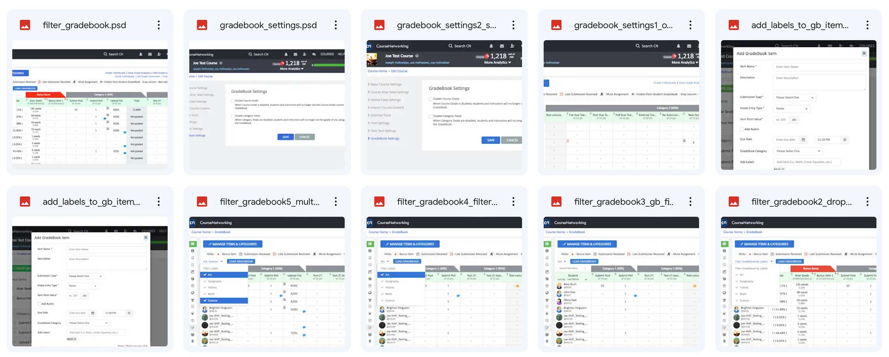
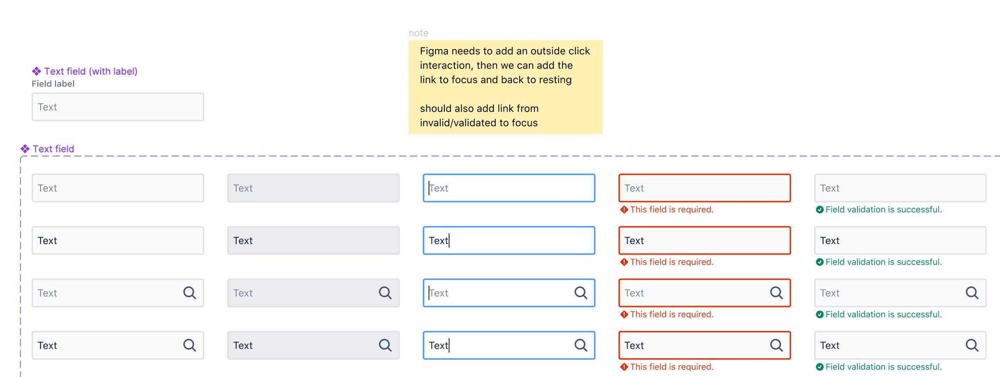
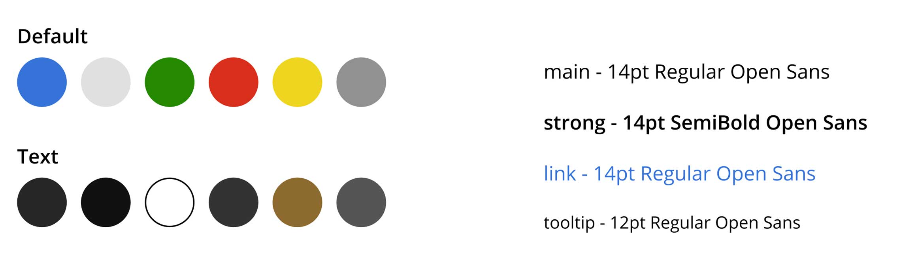
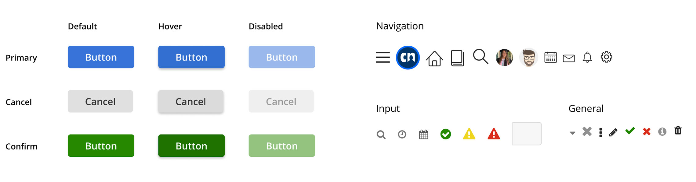

The Design Process
Review existing design elements (PS, IA, Sketch) / analyze design process
The first step in creating our new design system involved reviewing disparate existing CN design elements from Photoshop, Illustrator, and Sketch. This was important to organize all necessary design elements in one place and determine which elements would be essential for the design system, as well as CN's specific needs.
This drastically improved efficiency and allowed me to have a more streamlined design process. This made importing and recreating in our Figma design system significantly easier.
Research other design systems (Uber, Atlassian):
The next step was to begin researching other design systems. I wanted to get a good idea of best practices and common themes of design systems from major firms like Uber and Atlassian. They had publicly available design system Figma files that I was able to review. This allowed me to see how expert designers managed their design systems, such as page and tab organization.
This step was crucial in developing a vision for what a good design system for CN would look like, rather than starting from scratch and figuring it out as I went. This step was allowed us to create an efficient design system that incorporated best practices that I would not have known about otherwise.
Organize components (small to big, atomic?) Start, abstract (color, font)
After completing my initial research, I began to organize our existing components by size. I was able to plan a workflow for myself in Figma and the order I needed to add them to the design system.
Starting small, I first worked on organizing fonts and creating a color system. By doing this, I was able to develop a plan for our design system and focus on creating individual elements without wondering what I would have to work on next. This plan significantly reduced the time I spent in Figma organizing and creating the design system.
Create design elements (learn about Figma deep elements)
With my plan finalized, I began creating the design elements in Figma. While I had used the program before, I learned a significant amount about the deep features in Figma and how much they can speed up the design process.
Starting with smaller elements in the previous step, such as colors and fonts, allowed me to quickly create larger elements, such as icons and buttons. From there, I was able to create more complex design elements such as navigation menus and page blocks, and finally full pages.
This was the final step in creating the visual design system in Figma. Having all of the larger elements created and organized logically allowed for rapid prototyping and design organization in our system.
Communicate with team and teach them the system
After the Figma designs were completed, I needed to communicate with the team and teach them how to utilize the system effectively. Since other team members using it would not be as familiar with Figma, I gave them a presentation on both using the program and how to understand our design system.
This was one of the most important steps in this process, as it ensured that all team members were on the same page and understood how to use the design system efficiently. This enabled team members to create rapid mockups and discuss design ideas quickly using the drag-and-drop style elements in Figma. The design system ultimately helped create a more cohesive and effective design process for the entire product team.
Conclusion
This project was very successful for myself and the team. By creating a comprehensive and well-organized design system in Figma, I was able to streamline the design process at CN. This has freed up time for me to focus on more important UX issues rather than spending time on pixel-perfect UI details.
Through this process, I learned how complex and powerful a tool Figma is, and the level of investment needed to learn it well. It is also clear to me that solving higher-level design problems becomes much easier when you don't have to constantly tweak elements in Figma. The design system ultimately helps me communicate and work more effectively with the team.